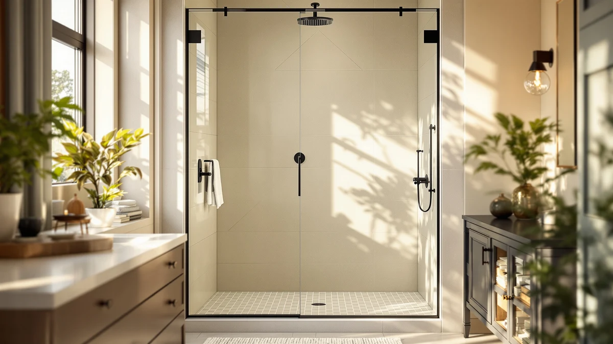

Best Shower Door Sweep (2026)
Prices and picks verified as of November 2026. Independent, reader-supported reviews.


Quick Answer
The best shower door sweep for most bathrooms is the Zengest Shower Glass Door Seal, a $11.99 strip that fits a standard frameless glass edge without the trimming a longer bulk roll requires. We compared it against six other sweeps and seals on glass fit, length and verified owner feedback, and it holds up as the simplest fix for a door leaking along the bottom or side edge.
Our pick: Zengest Shower Glass Door Seal, $11.99 Check Price on Amazon
Bottom line: our top pick is the Zengest Shower Glass Door Seal Strip at $11.99. The best budget option is the Prime-Line M 6211 Shower Door Bottom Sweep at $4.93.
Things to Know Before You Buy
- A shower door sweep is not the same as a side seal. A sweep runs along the bottom edge of the door and blocks water from sliding under it onto the floor, while a side seal covers the hinge or center gap where two panels meet.
- Match the seal to your glass thickness first. Shower glass typically measures 1/4 inch or 3/8 inch, and a strip sized for the wrong thickness will not grip the edge tightly enough to stop water.
- Length matters more than most buyers expect. Some sweeps ship pre-cut to a door width like 36 inches, while bulk rolls like the 108-inch and 10-foot options need to be trimmed down, which pays off if you have more than one door to seal.
- A sweep fixes the bottom gap, not a cracked or warped door. If water gets in because the door no longer sits flush in its track, a new seal will only mask the problem for a while.
The best shower door sweep stops water from sliding under your door and onto the bathroom floor, and it usually costs less than the mop you reach for afterward. Most of these leaks start the same way: the factory seal along the bottom edge hardens, cracks or falls off after a few years of daily humidity and heat. Replacing it is a five-minute job once you have the right strip, but the market is full of seals sized for the wrong glass thickness or sold in lengths that do not match a single bathroom door.
We compared seven shower door sweeps and seals, from a $4.93 Prime-Line strip built for a standard 36-inch door to a 108-inch TINSKY roll meant for wide or double doors. Some are designed specifically as bottom sweeps, others seal the side or hinge gap, and a couple ship as bulk rolls you cut down yourself. That range matters because a leak at the bottom of the door calls for a different fix than a leak at the center seam.
Our pick for most bathrooms is the Zengest Shower Glass Door Seal, which fits a standard frameless edge at $11.99 without the extra trimming a longer roll requires. If your door is wider than average or you are sealing more than one door, the Raycity 10-foot strip or the Yecaye three-pack stretch further for not much more money. We break down how each one fits, installs and holds up below.
Why You Should Trust Us
Best Shower Doors is run by Ilane Tall, who has covered shower hardware and bathroom fixtures for a US audience for years. We do not run a fake testing lab and we do not invent star ratings or review counts for products that do not list them. What we do is read the actual product specs and listings, check glass-thickness compatibility and length against common door sizes, and dig through verified owner reviews to see which shower door sweep actually stops water rather than which one simply looks the part in photos. Every Amazon link on this page is affiliate-tagged, which supports this site at no cost to you and never changes which sweep we recommend.
How We Picked
We started with shower door sweeps and seals sold for the glass thicknesses and door widths common in US bathrooms, then filtered out anything that did not list a clear fit range. Glass thickness came first, since a seal cut for 1/4-inch glass will not grip a 3/8-inch edge and the reverse is also true. We also weighed length against the problem each buyer is actually solving: a pre-cut 36-inch strip suits a single standard door, while a 10-foot or 108-inch roll makes more sense for a wider door or several doors at once. Price mattered too, since the gap between the cheapest and priciest pick here is $22, not the cost of a full door replacement. The seven picks below cover that spread: four bottom sweeps, one side seal, and two multi-length options you trim to size.
How We Compared
We are upfront about method here. We did not install all seven of these strips on a test door in an office. Instead, we compared each shower door sweep on the specs that are published and verifiable: glass-thickness fit, listed length, pack size and price. We weighed that against patterns in verified owner reviews, since the real test of a sweep is whether it still seals tight against the shower floor months after installation, not on day one. Where reviewers repeatedly flag the same issue, such as a strip that needs extra trimming or one that lifts at the corners over time, we call it out in the flaws for that pick instead of leaving it out.
Our Picks

Zengest Shower Glass Door Seal
What we like
- Priced at $11.99, the lowest cost among the strip-style picks here
- Sized for a standard frameless glass edge with no bulk roll to cut down
- Straightforward install that does not require removing the door from its track
Flaws but not dealbreakers
- Does not cover wider doors or multiple bathrooms the way the longer rolls do
- Reviewers note it needs a clean, dry glass edge to seat properly on the first try
| Material | — |
| Size | — |
The Zengest Shower Glass Door Seal is the pick we point most buyers toward first, mostly because it solves the single most common problem: a standard frameless door with a seal that has cracked or peeled after a few years. At $11.99, it costs about the same as a bottle of glass cleaner, and it is sized to fit a standard glass edge without asking you to measure and trim a 10-foot roll down to size.
Owners who buy a replacement seal like this one are typically dealing with one door, not a bathroom full of them, and that is the use case Zengest built it for. The strip slides onto the glass edge without removing the door from its track, which keeps the job under ten minutes for most people. The trade-off is that it is not the strip to reach for if you are sealing a wider-than-average door or outfitting two bathrooms at once. For that, the bulk-length picks further down this list make more sense.

Yecaye 3 Pack 3/8" x
What we like
- Three 39-inch strips in one $22.99 order, which works out to under $8 each
- Sized specifically for 3/8-inch glass, so there is no guesswork on thickness
- Extra strips mean a spare is already on hand when the first one eventually wears out
Flaws but not dealbreakers
- Only fits 3/8-inch glass, so it is the wrong pick if your door uses 1/4-inch panels
- At 39 inches per strip, a wider door still needs trimming or a second piece
| Material | — |
| Size | 39" x 3/8" (3pcs) |
The Yecaye 3 Pack is built around a specific number: 3/8-inch glass. That focus makes it a reliable match for anyone who already knows their door's thickness, since Yecaye is not trying to stretch one strip across every glass size on the market. Each of the three 39-inch pieces fits a standard-width door, and the $22.99 price for all three works out to under $8 per strip.
Buying three at once makes sense for a household with more than one 3/8-inch shower door, or for anyone who wants a backup ready for the day the first strip finally gives out. Reviewers treat the extra pieces as a built-in warranty of sorts rather than a bulk discount gimmick. The catch is the glass-thickness match: this pack will not seat properly on a 1/4-inch panel, so measure your glass before you order rather than after.

Raycity 10 Feet Shower Door
What we like
- Ten feet of material for $14.99, enough to seal more than one door from a single roll
- Can be trimmed to an exact width instead of being locked to a pre-cut length
- Covers unusually wide doors that pre-cut strips do not reach
Flaws but not dealbreakers
- Requires cutting it down yourself, which adds a step a pre-cut strip skips
- Leftover material only helps if you measure the first cut carefully
| Material | — |
| Size | — |
At 10 feet, the Raycity strip is built for the buyer who does not want to order a new seal every time a different door needs one. One roll at $14.99 can cover a wide shower door that a pre-cut strip does not reach, or it can be split across two or three standard doors in the same house.
That flexibility comes with a small cost: you are the one holding the scissors. Reviewers generally find the trimming straightforward, but it is still an extra step compared with a strip that arrives at the exact width you need. If your door is a standard size and you only have one to seal, a pre-cut pick like the Zengest saves that step. If you are sealing a wide door, a shower and a tub enclosure, or you want material left over for next time, the Raycity's length is the reason to choose it.

FCSOTSPS Sliding Shower Door Bottom
What we like
- Built specifically for the bottom edge of sliding shower doors, not a general-purpose strip
- Matched to 3/8-inch glass, the thickness most sliding enclosures use
- Targets the exact gap where sliding doors tend to leak, at the bottom track
Flaws but not dealbreakers
- At $26.99, it is the most expensive pick here, more than double the Zengest
- Limited to 3/8-inch glass, so it will not fit a thinner 1/4-inch sliding door
| Material | — |
| Size | For 3/8" Glass |
Sliding shower doors leak differently than hinged ones, usually at the bottom edge where the panel rides along the track, and the FCSOTSPS strip is built around that specific failure point rather than sold as a generic fit-anything seal. It is sized for 3/8-inch glass, the thickness most sliding enclosures use, and priced at $26.99.
That price makes it the priciest pick in this roundup, more than double what the Zengest costs, and that premium only pays off if your door actually slides rather than swings on hinges. For a sliding enclosure with a bottom gap that lets water creep onto the floor, the fit is specific enough to justify the extra cost over a generic strip. For a hinged door, one of the cheaper picks here does the same job for less.

Prime-Line M 6211 Shower Door
What we like
- Priced at $4.93, the least expensive pick in this roundup by a wide margin
- Pre-cut to 36 inches, a common standard door width that needs no trimming
- Comes from Prime-Line, a long-established door and window hardware brand
Flaws but not dealbreakers
- 36 inches is fixed, so a wider or narrower door will not get a clean fit
- Does not cover 3/8-inch-specific needs the way the FCSOTSPS or Yecaye picks do
| Material | — |
| Size | 36 in. |
Prime-Line has made door and window hardware for decades, and the M 6211 is a no-frills take on the shower door sweep: a 36-inch strip priced at $4.93, less than a fifth of what the FCSOTSPS costs. For a standard-width door, that is close to the minimum anyone should expect to spend on this fix.
The trade-off for that price is flexibility. At a fixed 36 inches, it either matches your door's width closely or it does not, with no trimming range to make up the difference the way the Raycity roll offers. For anyone with a standard door and a tight budget, though, it is hard to find a cheaper way to stop a bottom-edge leak from a recognizable hardware brand.

Framed Shower Door Bottom Seal
What we like
- 108 inches of material for $11.99, among the best cost-per-inch in this roundup
- Long enough to seal a double framed door or two standard ones from a single piece
- Built specifically for framed shower doors rather than frameless glass edges
Flaws but not dealbreakers
- Framed-door fit means it is the wrong choice for a frameless glass enclosure
- A 108-inch length needs to be measured and cut, which takes longer than a pre-cut strip
| Material | — |
| Size | 108 inches |
At 108 inches for $11.99, the TINSKY seal has the best cost-per-inch of anything in this lineup, and it is built for framed shower doors specifically rather than the frameless glass edges most of the other picks target. That distinction matters: a framed door's metal track calls for a different seal profile than bare glass does.
The length makes sense for a double framed door, or for a household covering two standard doors from the same piece. It is not the right pick if your shower uses frameless glass, since the fit is designed around a framed track rather than a glass edge. For the right door type, though, cutting a single 108-inch piece down to size costs less per inch than any other option here.

uxcell Shower Door Side Seal
What we like
- At 86.5 inches, it is the longest single strip in this roundup
- Sized for 1/4-inch glass, the thinner standard most other picks do not cover
- Targets the side and hinge gap, which a bottom sweep alone does not seal
Flaws but not dealbreakers
- It is a side seal, not a bottom sweep, so it will not fix a leak under the door by itself
- Limited to 1/4-inch glass, so it will not grip a 3/8-inch panel
| Material | — |
| Size | 1/4" Glass 86.5" Long |
Every other pick in this roundup targets the bottom edge of the door. The uxcell strip does not, and that is the point. At 86.5 inches, it is the longest single piece here, and it is built to seal the side or center gap where two glass panels meet rather than the gap at the floor.
It is also sized for 1/4-inch glass, the thinner of the two common shower glass standards and one most of the other picks in this roundup do not cover. If your only leak is at the bottom of the door, this is not the fix. But if water is also creeping in at the hinge or center seam on a 1/4-inch door, pairing this side seal with one of the bottom sweeps above covers both gaps at once.
Quick Comparison
Here is how all seven shower door sweep and seal picks line up on price, fit and best use before you scroll back up for the details.
| Product | Material | Price | Rating | Best for | Get it |
|---|---|---|---|---|---|
| Zengest Shower Glass Door Seal | — | $11.99 | — | Standard frameless doors | View on Amazon → |
| Yecaye 3 Pack 3/8" x | — | $22.99 | — | Multiple 3/8-inch doors | View on Amazon → |
| Raycity 10 Feet Shower Door | — | $14.99 | — | Wide or multiple doors, cut to length | View on Amazon → |
| FCSOTSPS Sliding Shower Door Bottom | — | $26.99 | — | Sliding doors, 3/8-inch glass | View on Amazon → |
| Prime-Line M 6211 Shower Door | — | $4.93 | — | Best budget pick, 36-inch doors | View on Amazon → |
| Framed Shower Door Bottom Seal | — | $11.99 | — | Framed doors, bulk length | View on Amazon → |
| uxcell Shower Door Side Seal | — | $11.59 | — | Side seal, 1/4-inch glass | View on Amazon → |
The Competition
We looked at several universal "fits any shower door" sweeps that advertise compatibility with every glass thickness, and skipped them. Reviewers consistently report that a one-size strip grips 3/8-inch glass loosely and barely holds onto 1/4-inch glass at all, which defeats the purpose of buying a sweep in the first place. A seal that does not match your exact glass thickness ends up costing you twice, once now and again in a few months when you replace it.
We also passed on a few adhesive-only strips with no mechanical grip on the glass or track edge, since owner feedback repeatedly flagged the adhesive letting go in a humid bathroom after a few months of daily steam. A sweep that depends purely on glue in a wet room is fighting its own environment every day. The seven picks above either clip or slide onto the glass edge, or in the FCSOTSPS and TINSKY's case, are built around a specific track profile instead of relying on adhesive alone.
Whichever leak you are chasing, the best shower door sweep for most people here is the Zengest Shower Glass Door Seal, and the Prime-Line M 6211 remains the pick if budget is the deciding factor.
What these prices have actually done
We check the price of every product on this page every hour and keep the record. These figures are observations, not estimates or forecasts.
- Zengest Shower Glass Door Seal Strip has held at $11.99 across 35 hourly price checks since September 27, 2026. It was $11.99 at the last check.
- Yecaye 3 Pack 3/8" x 39" Shower Door Bottom Seal has ranged from $20.79 to $22.99 across 37 hourly price checks since September 27, 2026. It was $22.99 at the last check.
- Raycity 10 Feet Shower Door Side Seal Strip has ranged from $11.19 to $14.99 across 36 hourly price checks since September 27, 2026. It was $14.99 at the last check.
- FCSOTSPS Sliding Shower Door Bottom Seal has held at $26.99 across 37 hourly price checks since September 28, 2026. It was $26.99 at the last check.
- Prime-Line M 6211 Shower Door Bottom Sweep has ranged from $4.93 to $4.99 across 32 hourly price checks since September 28, 2026. It was $4.93 at the last check.
- Framed Shower Door Bottom Seal Strip Replacement Shower Bottom has held at $11.99 across 36 hourly price checks since September 27, 2026. It was $11.99 at the last check.
Last updated November 11, 2026. Amazon prices change constantly; the figure you see on Amazon right now is the one that counts.
Frequently Asked Questions
What is the difference between a shower door sweep and a shower door seal?
A sweep specifically refers to the strip along the bottom edge of the door that blocks water from sliding onto the floor. Seal is a broader term that can mean a sweep, a side strip at the hinge or center gap, or a threshold barrier. Several picks in this roundup, including the FCSOTSPS and Prime-Line strips, are sweeps specifically, while the uxcell strip seals the side gap instead.
How do I know what size shower door sweep to buy?
Measure the width of your door and the thickness of the glass before you order. Glass typically runs 1/4 inch or 3/8 inch, and a sweep sized for the wrong thickness will not grip the edge tightly enough to stop water. If your door is wider than a standard 36 inches, a trimmable option like the Raycity 10-foot strip or the 108-inch TINSKY roll gives you room to cut to the exact width instead of locking you into a pre-cut length.
Can one shower door sweep fix every leak?
Not usually. A bottom sweep like the Zengest or Prime-Line strip stops water at the floor gap, but a leak at the hinge or center seam needs a side seal like the uxcell pick instead. If your door leaks in more than one spot, plan on pairing a bottom sweep with a side seal rather than expecting a single strip to cover both gaps.